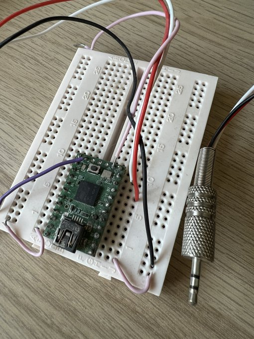

Forth on a calculator
This post was originally published as a Twitter thread.
Update: Since originally posting this, I’ve seen a video on YouTube discussing colour LCD displays which briefly mentions this family of calculators. It, along with many other videos on the same channel, is wonderful to watch.
I’m currently suffering with Covid-19. In “celebration”, here is a twitter thread describing my Covid lockdown project: hacking a Casio CFX-9850G calculator, from 1996 with 32KB of RAM and a 128x64 LCD screen, to run custom machine code.
Why? It all began when a friend of mine told me he prefers using the dc command over bc, as he is used to using reverse polish notation (RPN) on his calculator. My CFX-9850G, on the other hand, uses the more common infix notation. A comparison is shown here.
bc and dc CLI calculators.The CFX-9850G supports programming with Casio BASIC, which suppose I could have used, but it’s slow. To do this properly meant learning about how the calculator CPU works and somehow running my own machine code on the thing.
I tried to learn as much as I could about the hardware. I found a service manual and partial documentation of the calculator’s CPU by Martin Poupe at http://martin.poupe.org/casio/. This was super helpful and confirmed that it was indeed possible to run custom code.
I took apart the calculator and removed the ROM chip (a NEC branded 23C400). The plan was to dump the ROM, and then later solder in a new chip programmed with modified data. It took a few attempts to get a clean ROM dump, mostly due to my shoddy soldering. In retrospect, it would have been much easier to just use an adapter board or ZIF socket/clip.
I was able to dump the ROM using a universal EEPROM programmer, the widely available MiniPro TL866.
Now that I had a ROM dump, I could start seeing how the calculator’s built in OS works. Based on Martin’s previous work, I started writing a disassembler for the calculator’s Hitachi HCD62121 so that I could convert the ROM data into readable assembly listings.
At the same time, I amazingly found a partial implementation of the CPU in MAME’s source code, again based on work by Martin Poupe. Unfortunately, the MAME emulation didn’t work with my ROM, just showing a blank screen or crashing.
So, I made my own emulator. I used the partially working MAME core as a base, along with Martin’s CPU information and the Casio service manual to understand how the CPU, ROM, display and keypad all work together. The right side of the screen shows the CPU and RAM internals of the machine, along with controls to step through individual instructions, providing a simple debugger.
I then used the emulator to watch things as my ROM dump booted, tweaking the emulation until it finally worked. IIRC the problem was due to timing/sleep issues causing the calculator to immediately just turn off. Normally it does that after about 5 minutes to save power!
With a working emulator I could patch the ROM and test custom machine code. I patched my ROM to replace one of the Casio BASIC commands with a new one. That new command was programmed to jump to a specific location in RAM and then run whatever is there.
At this point I bought some new blank AT27C040 chips from AliExpress. They are pin-compatible with the ROM chip I pulled from the calculator, and can be programmed with a EEPROM programmer.

You’ll notice I’ve also switched from directly soldering to the EEPROM chip to using an adapter board instead. I burned in my patched ROM and soldered the chip back into the calculator. It booted!
Now, how do we get our new custom machine code into the calculator’s RAM so it can run? Well, back in the day Casio provided software to back up the calculator’s memory. Using this, we can write to RAM!
It turns out that the backup format is essentially just a hex dump of the calculator’s entire RAM, written in ASCII. So, we can add whatever we like by taking a calculator backup, patching the “data record”, then uploading it back to the calculator.

I don’t have the correct Program-link cable to plug into the calculator, but that’s nothing a Teensy and 2.5mm jack can’t fix. The calculator communicates with the PC using a serial signal. Here the Teensy is just acting as a RS-232 serial to USB converter.

Writing code for the calculator was a pain. I didn’t want to work with machine code directly, so writing an assembler was the way to go. David Salomon’s Assemblers And Loaders (1993) book was an incredible help with that.
I wrote a two-pass assembler in C, using flex and bison for lexing and parsing custom assembly code. The assembler produces what I’ve called an out.bin binary object file, which is similar to Unix’s old a.out format, containing the assembled machine code.
hcdasm, an assembler for the calculator’s custom CPU.I also wrote a linking loader that takes multiple out.bin formatted files from the assembler, links and relocates the machine code, sets up a specific entry point in the correct place, and finally builds a new RAM image ready to upload to the calculator.
hcdld, a linking loader that takes assembled objects and builds a RAM image for the calculator containing executable code.My first assembled program running on the actual hardware (that did anything interesting, anyway) was Conway‚Äôs Game of Life. This video was taken just after Conway died üò¢ I‚Äôve just checked, the source was 263 lines of assembly. It runs so much quicker than Casio BASIC code.
Next I made routines for writing text to screen. I store the data for a 4x6 pixel font in RAM, so that I can fit more characters on screen than in the default OS. At this point everything running is my own code, so it’s a bit like writing an OS from scratch.
At this point it was time for me to write a RPN interpreter. However, I decided to go a fair step further than that and implement a forth environment for the calculator, which works in RPN style by default. Forth is a wonderful language. You might think C is bare-bones, but it’s got nothing on forth. You can bootstrap up to an entire interactive programming environment by implementing a surprisingly few number of forth primitives in assembly.
Jonesforth is a minimal forth interpreter written in i386 assembly. The source code is written in a literate programming style and is an absolute joy to read from start to finish.
I ported Jonesforth from i386 to the custom assembly code for the calculator. It came out to about 1000 lines of assembly on top of the display code. Some of the code is stored directly as ASCII in RAM, and compiled by the forth compiler on startup!
And finally, after uploading the assembled forth interpreter to my calculator’s RAM: here is a video showing the result of a calculation that was input using RPN! Apologies for the poor video recording, the calculator screen has dimmed due to age and is extremely hard to film.